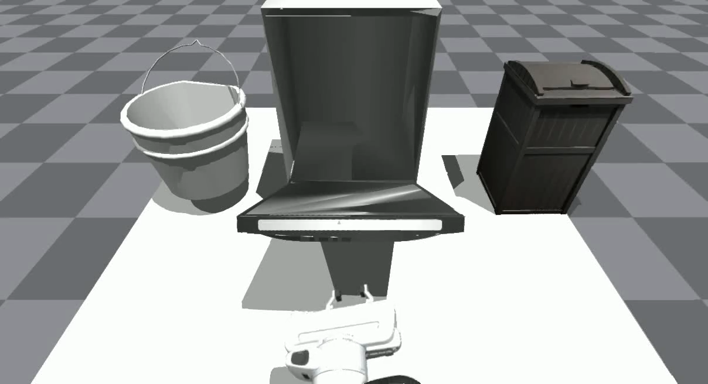
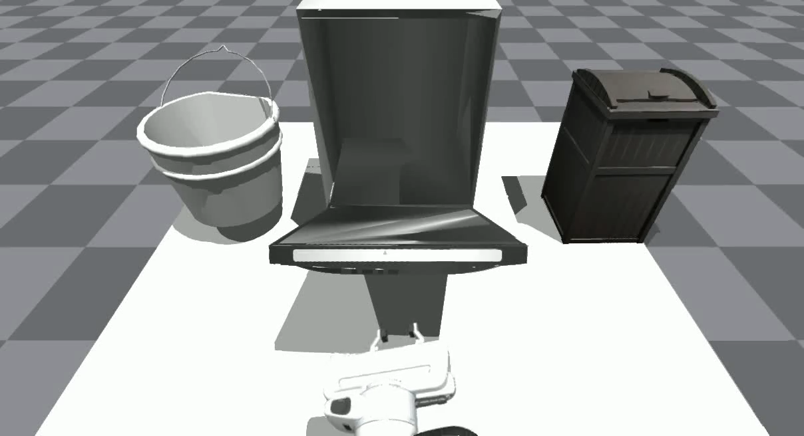
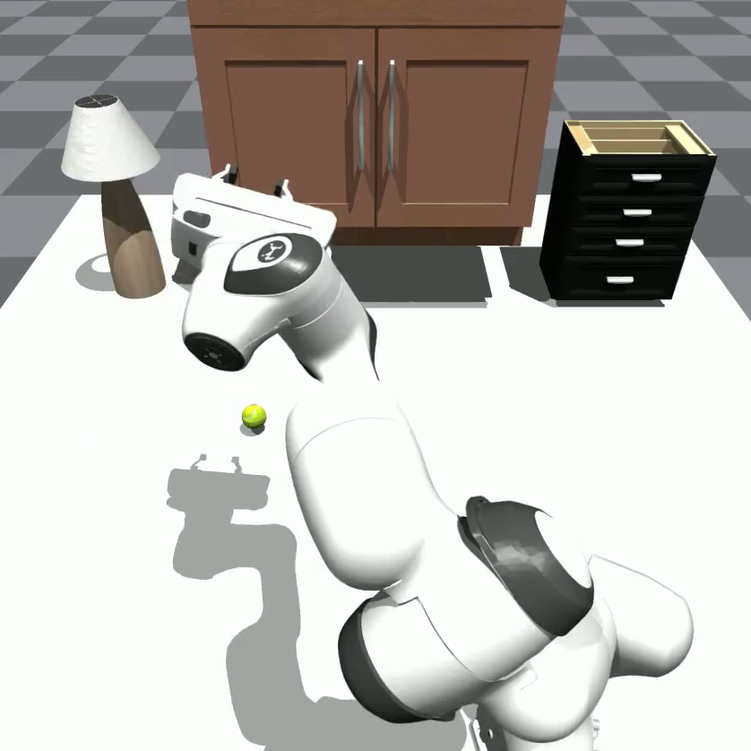
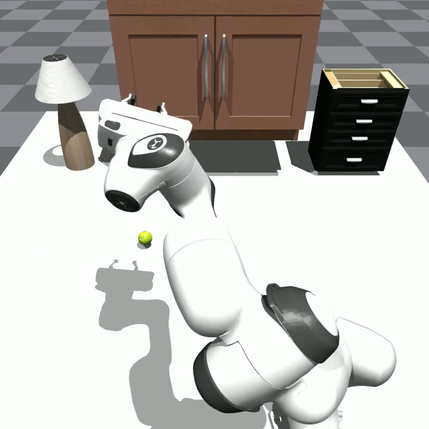

Gen2Sim Environments, Tasks and Reward Functions
In this demo, we visualize the generated environment, task descriptions, task decomposition and reward function from Gen2Sim. We show manipulation skills acquired while interacting with assets with varying part affordances and part structures. We also show skill chaining to achieve long-horizon tasks in complex environments.
Manipulation Skills
![Generated Task and Reward:
[sep]
videos/part_affordances/dishwasher/response_1.txt](videos/part_affordances/dishwasher/dishwasher_1_OpenDoor_0_.png) 

![Generated Task and Reward:
[sep]
videos/part_affordances/microwave/response_1.txt](videos/part_affordances/microwave/microwave_2_OpenDoor_0_.png) 

Select an image above:
Gen2Sim response shown within code block.